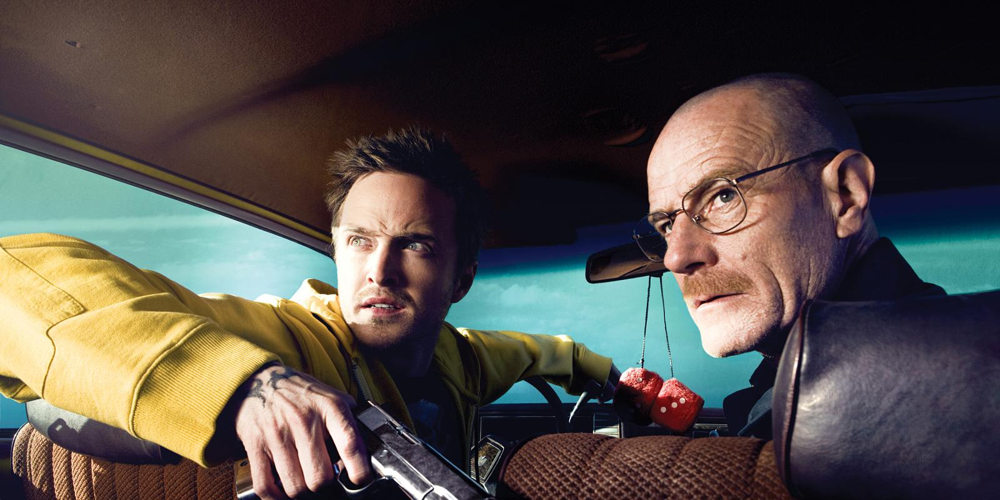
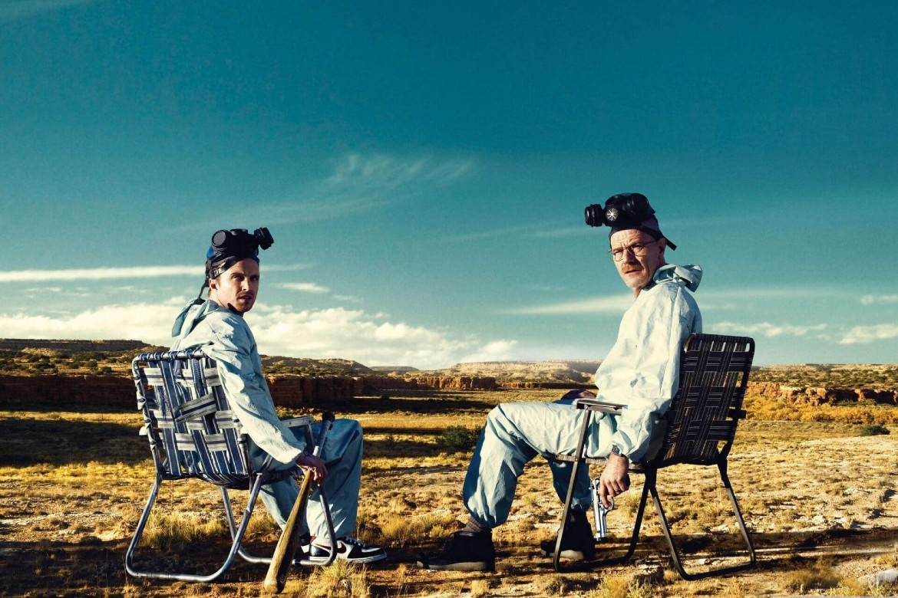
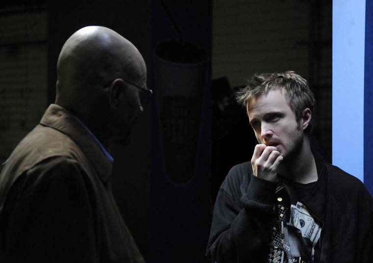
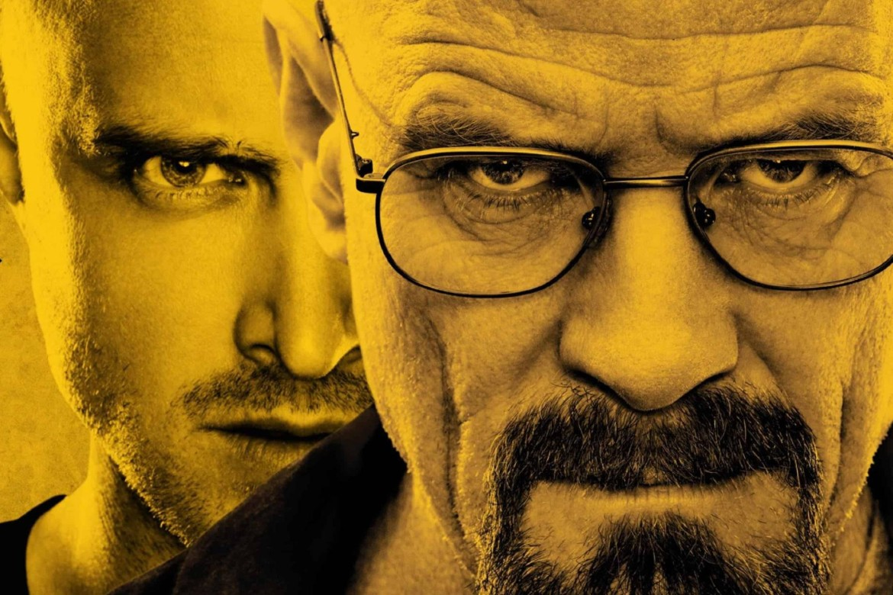
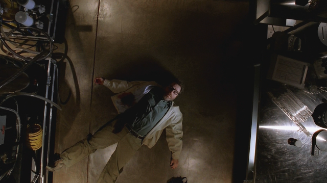

Breaking Bad é uma série de televisão americana criada e produzida por Vince Gilligan. Ela retrata a vida do químico Walter White, um homem brilhante frustrado em dar aulas para adolescentes do ensino médio enquanto lida com um filho sofrendo de paralisia cerebral, uma esposa grávida e dívidas intermináveis. White, então, é diagnosticado com um câncer no pulmão - o que o leva a sofrer um colapso emocional e abraçar uma vida de crimes para pagar suas dívidas hospitalares e dar uma boa vida aos seus filhos.[7] Walter resolve produzir metanfetamina de alta pureza com seu ex-aluno, Jesse Pinkman.
Breaking Bad se passa em Albuquerque, Novo México, e gira em torno das escolhas de seu protagonista, as quais o levam a uma intensa, dolorosa e inevitável transformação. Amplamente considerada como uma das melhores séries da história, ao seu final, foi um dos programas da televisão a cabo mais assistidos nos Estados Unidos, recebendo inúmeros prémios, incluindo dezesseis Primetime Emmy Awards, oito Satellite Awards, dois Globos de Ouro e um Prémio Escolha Popular. Em 2014, entrou para o Livro dos Recordes como o seriado mais bem avaliado de todos os tempos pela crítica.
A série foi originalmente exibida pelo canal de televisão por assinatura AMC, onde estreou no dia 20 de janeiro de 2008 e, depois de cinco temporadas de sucesso, teve seu último episódio transmitido no dia 29 de setembro de 2013. Em Portugal, foi exibida pelos canais SIC Radical, TVséries e MOV. No Brasil, o seriado é exibido pelo canal pago AXN e pelo serviço de streaming Netflix e, na TV aberta, foi exibida pela Rede Record e pela Band.

Desenvolvimento
Conceito
O ator que interpreta o personagem principal, Bryan Cranston, declarou numa entrevista que "o termo 'breaking bad' é uma gíria do Sul que significa que alguém desviou-se do caminho correto e passou a fazer coisas erradas. E isto aplica-se tanto a um dado momento quanto a uma vida inteira." A rede AMC, que exibiu a série em 20 de Janeiro de 2008, pediu originalmente nove episódios para a primeira temporada (incluindo o episódio piloto), mas a Greve dos Escritores Americanos de 2007–2008 limitou a produção aos sete episódios existentes.
Eu quero fazer o sincronismo de cor para cada um desses episódios em que você se senta com o colorista e certifica-se de que a cor de cada cena individual é exatamente da maneira que você queria.
— Vince Gilligan, em entrevista para IndieWire, julho de 2012
Breaking Bad foi criado por Vince Gilligan, que, por vários anos, foi roteirista da série The X-Files. Gilligan queria criar uma série em que o protagonista torna-se o antagonista. "A televisão é historicamente boa em manter seus personagens em uma estase auto-imposto de modo que shows podem durar anos ou mesmo décadas", disse ele. "Quando percebi isso, o próximo passo lógico era pensar, como posso fazer um show em que a unidade fundamental é para a mudança?" Ele acrescentou que seu objetivo com Walter White foi para transformá-lo de Sr. Chips para Scarface.
Antes de ser adquirida pela AMC, Breaking Bad foi oferecida a outros canais americanos, como TNT, Showtime e FX. A série foi rejeitada até pela HBO, recusa que chamou a atenção pelo desprezo durante a apresentação feita por Vince Gilligan. Segundo ele, a executiva do canal e os subordinados dela presentes na reunião foram rudes e não prestaram atenção na apresentação. “A executiva que me atendeu não poderia ter mostrado menos interesse. Era palpável sentir o quanto estavam desinteressados”, relembrou.
Desenvolvimento da Historia
A rede encomendou nove episódios para a primeira temporada (incluindo o piloto), mas em 2007-08 a Writers Guild of America limitou a produção de sete episódios. As versões iniciais do roteiro foram fixadas em Riverside, Califórnia, mas por sugestão da Sony, Albuquerque foi escolhida para a localização da produção devido às condições financeiras favoráveis oferecidos pelo estado do Novo México. Uma vez que Gilligan reconheceu que isso significaria "que sempre teria que estar evitando as montanhas de Sandia" em cenas voltadas para o leste, a definição da história foi mudada para o local de produção real.
Roteiro
O conceito surgiu quando Gilligan conversou com seu colega escritor Thomas Schnauz em relação à sua taxa de desemprego atual e brincou dizendo que a solução era para que eles colocassem um "laboratório de metanfetamina na parte de trás de um RVand em todo o país preparar metanfetamina e ganhar dinheiro.
Gilligan disse, antes do final da série, que foi difícil de escrever o personagem Walter White porque era muito obscuro e moralmente questionável: "Vou sentir falta da série quando acabar, mas de certa forma vai ser um alívio não ter mais Walt na minha cabeça." Gilligan mais tarde disse que a ideia para o personagem de Walter intrigou tanto que ele "realmente não deu muita atenção de quão bem ele iria vender", afirmando que ele teria desistido na premissa desde que foi "um tanto estranho, história sombria" que poderia ter dificuldades de ser lançada para os estúdios Enquanto a série progrediu, Gilligan e a equipe de roteiristas de Breaking Bad fizeram Walter cada vez mais antipático. Gilligan disse durante a execução da série: "Ele vai ser um protagonista de um antagonista Queremos fazer que as pessoas questionem por quem estão torcendo, e por quê." Cranston disse na quarta temporada: "Eu acho que Walt descobriu que é melhor ser um perseguidor do que o perseguido. Ele está bem em seu caminho para a ruptura total."
Enquanto ainda lançando o show para os estúdios, Gilligan foi inicialmente desencorajado quando soube da série Weeds e suas semelhanças com a premissa de Breaking Bad. Enquanto seus produtores o convenceram de que a série era diferente o suficiente para ainda ser bem sucedido, mais tarde ele afirmou que ele não teria ido para a frente com a ideia de que ele tinha conhecido sobre Weeds.
Filmagens
O ator que interpreta o personagem principal, Bryan Cranston, declarou numa entrevista que "o termo 'breaking bad' é uma gíria do Sul que significa que alguém desviou-se do caminho correto e passou a fazer coisas erradas. E isto aplica-se tanto a um dado momento quanto a uma vida inteira." A rede AMC, que exibiu a série em 20 de Janeiro de 2008, pediu originalmente nove episódios para a primeira temporada (incluindo o episódio piloto), mas a Greve dos Escritores Americanos de 2007–2008 limitou a produção aos sete episódios existentes.
Finalização
Em Julho de 2011, Vince Gilligan indicou que tinha a intenção de concluir Breaking Bad, no final de sua quinta temporada. No início de Agosto de 2011, as negociações começaram sobre um acordo a respeito da quinta e última temporada possível entre a rede AMC e Sony Pictures Television, a empresa de produção da série. AMC tinha proposto uma quinta temporada mais curta (de seis a oito episódios, em vez de 13) para cortar custos, mas os produtores diminuíram. A Sony, em seguida, aproximou-se de outras redes de cabo sobre a possibilidade de pegar o show, se um acordo não ocorresse. Em 14 de Agosto de 2011, a AMC renovou a série para quinta e última temporada composta por 16 episódios. Devido a popularidade global, o criador Vince Gilligan agradeceu ao Netflix e o Emmy Awards em Setembro de 2013. Chegando ao ponto de dizer que a Netflix "nos manteve no ar".
Sinopse
Primeira temporada
A primeira temporada foi originalmente destinada a ter nove episódios, mas devido a greve em 2007-2008 do Writers Guild of America apenas sete episódios foram filmados. A primeira temporada estreou em 20 de Janeiro de 2008, e foi concluída em 9 de março de 2008. Walter White (Bryan Cranston) é um professor de química do ensino médio, que complementa sua renda familiar trabalhando meio período em um lava-jato, e é diagnosticado com um avançado e inoperável câncer de pulmão. Num passeio com o seu cunhado, o qual é um agente da DEA, Hank (Dean Norris), Walter vê um ex-aluno dele, Jesse Pinkman (Aaron Paul), fugindo da cena de um laboratório de metanfetamina. Mais tarde, ele encontra Jesse e o chantageia para se tornarem parceiros na tentativa de combinar suas habilidades para fabricar e distribuir metanfetamina da mais pura qualidade. Walter diz que quer dar estabilidade financeira à sua esposa grávida, Skyler (Anna Gunn) e ao seu filho deficiente, Walter Jr. (RJ Mitte), e para pagar seu tratamento caro contra o câncer.
Durante os primeiros dias de venda, Walter e Jesse em Albuquerque, se deparam com uma série de problemas com traficantes locais, Krazy-8 e Emilio Koyama. Walter se vê obrigado a matar Emilio para se defender, o intoxicando na van onde cozinhavam a droga. Após levarem e algemarem Krazy-8 inconsciente no porão de Jesse, Walter decide se desfazer do corpo de Emilio por dissolução em ácido fluorídrico. Jesse fica encarregado dessa parte, enquanto Walter lida com dilemas morais quando descobre que Krazy-8 está consciente e que vai matá-lo assim que o soltar. Walter enforca Krazy-8 com o freio da bicicleta, aos prantos por ter matado um ser humano.
Ele continua a produzir metanfetamina com a ajuda de Jesse, até chegarem em um perigoso traficante local chamado Tuco Salamanca. Jesse vai fazer acordo com Tuco, juntamente com seu amigo Skinny Pete, mas antes de receber o dinheiro é espancado por Tuco e levado ao hospital inconsciente. Walter vai de encontro com Tuco, sob a alcunha de 'Heisenberg', e o força a fechar negócios com eles, explodindo seu escritório com uma bomba de mercúrio. A temporada se encerra em um ferro-velho (onde costumam fechar os negócios e fazerem as trocas), onde Tuco, descontrolado, espanca seu capanga No-Doze até a morte.

Segunda temporada
Em 7 de maio de 2008, a AMC anunciou que Breaking Bad foi renovado para uma segunda temporada de 13 episódios. A produção começou em Julho de 2008, e a temporada estreou em 8 de março de 2009 e concluída em 31 de maio de 2009.
Tuco ameaça Walter e Jesse, e ambos ficam aterrorizados. Ambos decidem que devem matar Tuco, mas são capturados por ele antes de tomarem qualquer atitude. Tuco os leva até a casa de seu tio Hector, um ex-chefe de cartel que está imobilizado em uma cadeira de rodas, que provavelmente sofreu um derrame e se comunica por um sino. Walter e Jesse tentam envenenar Tuco, mas seu tio lhe 'mostra que há algo errado com os dois'. Tuco joga os dois fora da casa com um fuzil, prestes a matá-los, mas Jesse consegue se safar e atira em sua barriga. Os dois o deixam sangrando, e mais tarde Hank encontra o local e mata Tuco durante um tiroteio.
Walter continua a encontrar-se diante de contas médicas intransponíveis do seu tratamento contra o câncer. Hank desenvolve síndrome do pânico devido ao tiroteio com Tuco. Hank é convidado a ir até El Paso, onde um informante do cartel, Tortuga, irá colaborar com o DEA em prender membros de um cartel. Porém Tortuga é morto, o cartel arma uma explosão, deixando vários membros do DEA feridos, contribuindo ainda mais para as crises de pânico de Hank.
Apesar de ter tido várias más experiências ao produzir metanfetamina com Jesse, Walter concorda em retomar a parceira. Os dois começam a produzir metanfetamina, mas enfrentam vários problemas. O amigo de Jesse, Badger (Matt L. Jones) é preso ao vender metanfetamina em uma operação policial. Walter contrata um advogado, Saul Goodman (Bob Odenkirk), para ajudar Badger. Depois de solto, Badger, juntamente com Skinny Pete passam a vender metanfetamina em baladas e bocas de fumo, sob supervisão de Jesse, porém, a droga de Skinny Pete é roubada por um casal de usuários de meta. Isso chega até Jesse, que não vê como um problema, mas Walter acha que medidas devem ser tomadas, dá uma arma à Jesse e o manda até a casa dos viciados para os ameaçarem. Jesse, contrariado, vai até a casa dos dois, porém não os encontra, e sim um garotinho sujo em estado deplorável, filho do casal. Jesse passa a cuidar do garoto e dando comida, até que os pais chegam, e ele esconde o menino. Após uma discussão, na qual ambos estão extremamente alterados sob efeito das drogas, a mulher mata o marido, deita no sofá e dorme. Jesse, horrorizado, liga para a polícia e corre até a porta, porém lembra do garotinho, que sentiu afeição, e corre para o tirar de lá. Jesse deixa o garotinho no lado de fora da casa enrolado numa coberta, para esperar a polícia, e, emocionado,diz para ele ter uma boa vida pela frente. Jesse volta para casa traumatizado.
Jesse desesperado liga para Walter, que liga para Saul. Saul manda Mike Ermanthraut (Jonathan Banks) limpar as drogas na casa de Jesse, e mais tarde Jesse some. Walter o encontra em uma espécie de 'cracolândia', drogado e inconsciente. Walter o ajuda a se levantar, mas Jesse, se sentindo culpado pela morte de Jane, chora nos braços de Walter. Walter interna Jesse em uma clínica de reabilitação. Skyler confronta Walter sobre suas frequentes ausências e desculpas. Ela começa a juntar sua vida secreta, deduz que ele está envolvido em atividades ilícitas e exige o divórcio.
Terceira temporada
Em 2 de Abril de 2009, a AMC anunciou que Breaking Bad foi renovada para uma terceira temporada de 13 episódios. Walter quer reunir sua família, mas Skyler ainda suspeita da segunda vida de Walter. Walter acredita que ele pode consertar a tensão entre eles, confessando-lhe que ele tem vindo a produzir metanfetamina. Skyler está consternada com a confissão e exige um divórcio formal. Enquanto isso, Gus se oferece para pagar a Walter EUA $ 3 milhões por três meses de seu serviço. Ele mesmo se oferece para fornecer Walter com uma unidade de produção e um assistente de laboratório brilhante, Gale (David Costabile). Jesse continua a produzir e vender metanfetamina por si mesmo. Hank está trabalhando com a DEA para investigar Jesse e está lentamente a reunir provas para fazer uma prisão. A polícia rastreia o trailer de Jesse e Walt, e ambos correm imediatamente para o ferro-velho, sem saber que Hank estava seguindo Jesse. Os dois se trancam no trailer, e Hank, sem saber que Walt também está lá, ameaça invadir. Encurralado, Walter pede para Saul ligar para Hank e mentir, dizendo que Marie, sua esposa, foi vítima de um acidente. Hank imediatamente abandona o local e corre até o hospital, e quando percebe que tudo foi uma armadilha, fica furioso. Walt manda destruir o trailer, eliminando toda e qualquer evidência dele e Jesse.
Hank vai até a casa de Jesse, o agredindo violentamente, e, percebendo sua falta de controle, interrompe o ato e chama a ambulância. O DEA apreende o distintivo e a arma de Hank, e ele fica suspenso. Walt visita Jesse no hospital para oferecer a posição de Gale no laboratório e serem sócios novamente. Jesse, chorando, nega até o fim, afirmando que tudo e todos que ele amava em sua vida, foi morto e destruído por causa de Walter, e que Walter só o quer por perto para o manipular. Walt, se aproveitando do estado emocional de Jesse, o elogia, usando de manipulação para Jesse aceitar, e Jesse mais tarde aceita. Jesse retira a queixa sobre Hank, fazendo que o mesmo possa ter sua licença de agende federal novamente. Após a obtenção da posição, Jesse começa a roubar metanfetamina do laboratório e vendê-lo em segredo. Dois assassinos do cartel, primos de Tuco Salamanca, decidem se vingar de Walter, porém Gus os informa que quem matou Tuco foi Hank, não Walter. Hank, sem distintivo e armas, alegre por estar de volta na corporação, compra flores para Marie, e enquanto entra em seu carro no estacionamento de um shopping, recebe uma ligação misteriosa, onde uma voz diz que dentro de 1 minuto, dois membros do cartel (primos de Tuco) irão tentar matá-lo. Desesperado, e ainda sem sua arma, Hank é gravemente baleado no estacionamento, mas por pouco mata um dos dois assassinos e destrói as pernas do outro. Hank é levado à emergência, e deve passar por fisioterapia para poder andar novamente. Mike envenena o assassino que está no hospital sem as pernas, às ordens de Gus.
Jesse se envolve romanticamente com Andrea Cantillo, uma garota que ele encontra em seu grupo de reabilitação. Jesse tenta convencer Andrea a comprar metanfetamina dele, mas se arrepende após descobrir que ela tem um filho, um garotinho de 8 anos chamado Brock. Mais tarde, Jesse descobre que o irmão mais novo de Andrea, de 11 anos, foi colocado por Gus e seus traficantes de rua para matar Combo. Jesse decide vingar Combo e matar os dois traficantes. Walter interrompe o ato, e mata os dois traficantes antes que atirassem em Jesse. Após, Walter ajuda Jesse em escapar da ira de Gus, e o esconde em um fliperama. Gus começa a perder a confiança em Walter e pede a Gale para assumir o laboratório. Ele ordena que seus capangas matem Walter e Jesse. Walter confessa seu plano de matar Gale para Jesse, na qual Jesse implora para que ele não faça e diz que não irá matar Gale, pois não são assassinos. Walter não dá ouvidos e segue com o plano, mas na mesma noite é raptado por Mike e Victor. Walter instrui Jesse por telefone para matar Gale, a fim de forçar Gus não matar Walter, numa cartada final. Mike liga imediatamente para Gale, sem êxito, pois o mesmo está escutando música alta em seu apartamento e seu celular está no silencioso. Gale ouve alguém bater em sua porta, e quando atende vê Jesse, que lhe empunha uma arma. Gale implora para não morrer, e Jesse, trêmulo e chorando, atira e mata Gale, o que acaba com a última gota de inocência dentro do garoto.
Quarta temporada
Em 14 de Junho de 2010, a AMC anunciou Breaking Bad foi renovada para uma quarta temporada de 13 episódios. A produção começou em Janeiro de 2011, a temporada estreou em 17 de Julho de 2011, e concluída em 9 de Outubro de 2011. Jesse segue as instruções e assassinatos de Walter para matar Gale. Gus decide disciplinar os dois através da aplicação de políticas mais rigorosas no laboratório, e degola Victor na frente dos dois como demonstração de poder. Jesse, tomado pela culpa de ter matado Gale, enche sua casa de pessoas desconhecidas e promove uma festa de 3 dias seguidos, pois acha que se sentiria melhor rodeado de pessoas, o que não acontece. Gus Fring tenta quebrar a amizade de Walter e Jesse, atribuindo-lhes detalhes de trabalho separado, onde a relação deles começa a ficar cada vez mais distante. Enquanto Walter trabalha no laboratório de metanfetamina, Jesse acompanha Mike (Jonathan Banks), um dos executores de Gus, para recuperar os pagamentos e fornecer suporte, na qual desenvolvem um laço "pai-e-filho" muito forte. Jesse se prova cada vez mais corajoso e ganha a confiança de Gus como um membro da sua equipe. Walter e Jesse estão cada vez mais hostis entre si.
Skyler tenta encorajar Walter a sair do negócio da metanfetamina, pois isso traz riscos à sua vida e a família, dizendo que ele está em perigo. Walter imediatamente a confronta dizendo que ele não está em perigo, e que são os outros que devem temê-lo, deixando claro que ele matará quem estiver no caminho dele, deixando Skyler apavorada, e com medo de Walter. Enquanto isso, Hank, que vem se recuperando de seu último envolvimento com o cartel, descobre evidências ligando Gale com Gus Fring. Ele acredita que Gus é um grande distribuidor de drogas e começa a olhar para a evidência tangível para prestar queixa. A consciência de Jesse pesa cada vez mais por ter tirado uma vida, e não se aceita como uma boa pessoa. Em uma de suas reuniões de reabilitação, desaba em choro, admite que se odeia e diz que só esteve lá todo esse tempo para vender cristal para os presentes. O cartel de Don Eladio vem aterrorizando e pressionando Gus Fring, assassinando seus mulas e entregadores, roubando sua metanfetamina e os ameaçando de morte, tudo para darem a eles seu cozinheiro, seja Walter ou Jesse. Isso causa extrema revolta em Gus Fring, e o mesmo passa a pensar em uma válvula de escape. Gus decide que deve por um basta a essas provocações.
É mostrado o passado de Gustavo Fring, onde ele tenta fazer um acordo amigável com o cartel de Don Eladio, e seu amigo e cozinheiro é morto por Hector Salamanca, que na época ainda andava e era o segundo no comando, ameaçando a vida de Gus, ainda jovem. Gus elabora um plano de vingança a Don Eladio e todo o cartel. Walter quer a todo custo que Jesse mate Gus envenenado com a ricina do cigarro, porém Jesse fica receoso, pois Gus pode perceber e acabar o matando. O cartel força Gus a dar seu cozinheiro (Jesse) para eles, e então Mike, Gus e Jesse viajam para o México. Gus envenena e mata todos do cartel, incluindo Don Eladio, e se estabelece como novo chefão do crime, acima de todos os outros. Eles então se envolvem em um tiroteio, na qual Mike é baleado, e Jesse salva ambos. Gus volta ao asilo onde seu rival, Hector Salamanca, está internado, e o tortura psicologicamente mostrando que todo o cartel e sua família estão mortos.
Gus percebe laços estreitos de Walter com Hank que poderiam comprometer toda a sua operação, pois Hank está em cima dele e de toda sua rede de distribuição, ligando os fatos. Gus captura Walter, põe um capuz em sua cabeça e diz que vai dar cabo de Hank, e que se ele tentar intervir, irá matar toda a sua família. Walter envenena o garotinho Brock, filho de Andrea, e manipula Jesse em parecer que Gus Fring e seus capangas envenenaram o garotinho. Jesse desconfia que Walter envenenou o garotinho e o confronta, com uma arma em sua cabeça, porém Walter convence Jesse que a culpa é de Gus Fring. Jesse e Walter colocam suas diferenças de lado e aceitam o assassinato de Gus, convencendo o ex-executor do cartel Hector Salamanca a detonar uma bomba suicida; Hector tem sucesso nessa empreitada, matando a si mesmo, Gus, e Tyrus, capanga de Gus.
Walter e Jesse, em seguida, destroem o laboratório de metanfetamina em um incêndio, e Walter declara a sua esposa, "eu ganhei".
Quinta temporada
Em 14 de Agosto de 2011, a AMC anunciou que Breaking Bad foi renovada para uma quinta e última temporada composta por 16 episódios. A quinta temporada é dividida em duas partes, cada uma composta por oito episódios. A primeira metade estreou em 15 de Julho de 2012, enquanto a segunda metade estreou em 11 de Agosto de 2013.
Após a morte de Gus Fring, Walter cria uma sociedade com Jesse e Mike para uma nova operação de produção e distribuição de metanfetamina. Mike lida com todos os aspectos comerciais do negócio, enquanto Walter e Jesse trabalham com uma equipe de fumigação para produzir metanfetamina em casas isoladas e interditadas para fumigação. Então eles percebem que estão sem metilamina, e elaboram um plano para roubar um vagão de trem lotado de metilamina sem ninguém descobrir, e fazem um acordo com uma mulher chamada Lydia Rodarte-Quayle, antiga parceira de Gus Fring, dona da companhia alemã Madrigal. Walter, Jesse, Mike e Todd conseguem roubar a tonelada de metilamina, porém um garotinho (Drew Sharp) vê tudo. Todd atira no garoto, matando-o, deixando Jesse horrorizado.
Jesse, assombrado por todas as coisas horríveis que aconteceram, resolve sair do negócio da metanfetamina definitivamente juntamente com Mike, deixando Walter irado. Hank e o DEA conseguem identificar nove presos e um advogado com ligações criminosas com Mike. Mike resolve sair da cidade o quanto antes, porém Walter o confronta para que lhe dê a lista das testemunhas na prisão, na qual Mike recusa, e os dois discutem. Walter mata Mike pelas costas, só para depois lembrar que poderia conseguir os nomes com a Lydia, e esconde o corpo de Mike para Jesse não descobrir. Walter depois contrata Jack Welker, o líder de uma quadrilha neo-nazista e tio de Todd, para matar os dez informantes de dentro da prisão. Walter se estabelece como o maior chefão do crime com seu império, e seus negócios continuam a deslanchar até que ele decide se aposentar após acumular $ 80 milhões, que ele esconde enterrado no deserto.
Skyler tira as crianças da casa e os põe para morar na casa dos tios, Hank e Marie, alegando que sua casa não é segura para eles. Walter diz que fizeram tudo pela família, onde Skyler rebate, dizendo que seus filhos não morarão numa casa onde machucar, assassinar pessoas e traficar drogas é tido como algo normal. Walter a confronta violentamente, e ela diz que espera que ele morra de câncer o mais rápido possível para ficar livre daquela vida.
Jesse recebe seus $ 5 milhões, mas quer deixar metade para a neta de Mike, e a outra metade para a família de Drew Sharp, o garotinho que foi morto. Saul o impede de fazer isso e retorna o dinheiro a ele. Jesse não aceita o dinheiro, pois é dinheiro sujo de sangue, e resolve jogar todo o dinheiro fora nas ruas, de madrugada, com peso em sua consciência, ficando sem nada.
Mais tarde, Hank e Marie são convidados para a casa dos White, onde Hank inadvertidamente se depara com um dos livros de Walter com uma mensagem assinada por Gale Boetticher. Ele percebe que Walter é o 'Heisenberg' e secretamente reinicia a investigação. Walter decide manipular Jesse para ele fugir da cidade, como se isso fosse para o bem dele, mas Jesse percebe que é para o próprio bem de Walter, manda ele parar de manipulá-lo e diz que sabe que Walter matou Mike; Walter, como último recurso vendo o garoto abalado emocionalmente, o abraça, e o convence mais uma vez. Minutos antes de ir embora, Jesse descobre que Walter realmente envenenou Brock e, enfurecido, vai até a casa da família White, arromba a porta e joga gasolina na sala inteira. Prestes à incendiar a casa, Jesse é surpreendido por Hank, que o tinha seguido. Jesse, aos prantos, diz que Walter não pode continuar saindo ileso de seus malfeitos, e Hank acalma o garoto. Hank faz uma aliança com Jesse, que agora despreza Walter e quer vê-lo pagar por tudo que fez. Encurralado, Walter contrata Jack novamente, desta vez para matar Jesse. Hank, Gomez e Jesse fazem uma armadilha para Walter no deserto, onde seu dinheiro está enterrado, e Walter cai, tomado por ganância. Walter liga para Jack alegando estar em perigo, mas quando vê que Jesse está com Hank e Gomez, cancela a operação. Walter é rendido por Hank e preso, e Hank liga para Marie para dar a notícia da prisão de Walt. A gangue neonazista chega e Hank se envolve em um tiroteio feroz. Hank é baleado, e Walter o aconselha a fazer um acordo com Jack, na qual Hank recusa. Jack executa Hank na frente de Walter, apesar de todos seus apelos, que cai horrorizado. Tomado de ódio, Walter entrega Jesse para Jack e sua gangue e dá o aval para o matarem. Ao invés disso, o plano é mudado e decidem levar Jesse cativo, o interrogar e depois o matar. Antes de levarem Jesse, Walter, por vingança, revela à Jesse que viu Jane morrer, e não a salvou de propósito. Antes de sair, Jack e sua gangue tomam a maioria do dinheiro de Walter, deixando-o com apenas US $ 11 milhões. Jesse é surrado e vira escravo, coagido a produzir metanfetaminas para a quadrilha. Marie faz Skyler confessar toda a verdade para Walter Jr., e após chegarem em casa, se deparam com Walter fazendo malas e dizendo que eles devem fugir da cidade juntos. Skyler questiona sobre o paradeiro de Hank, já que Walt estava preso, e fica sabendo que Hank foi morto. Os dois entram numa briga de faca onde Walter Jr. pula sobre Walt para salvar a mãe, e imediatamente liga para a polícia para denunciar o pai. Walt foge com Holly, e mais tarde em um telefonema com a escuta da polícia, a família toda fica sabendo que Hank e Gomez estão mortos, onde Marie cai de joelhos aos prantos. Walter deixa Holly em um corpo de bombeiros.
Walter passa os próximos vários meses escondido em uma cabana em New Hampshire, enquanto luta contra o câncer, e Skyler foi obrigada a morar com as crianças em uma casa minúscula afastada no subúrbio, pois perderam a sua casa e todos seus bens, incluindo os carros, para o governo. Jesse tenta escapar do complexo onde está preso, mas é pego antes de pular o cercado. Furioso, diz para o matarem e que nunca mais irá cozinhar para a gangue, os chamando de psicopatas. Como punição, Todd vai até a casa de Andrea e a mata na frente de Jesse, que está amordaçado em uma van. Jack manda Jesse parar de gritar e ameaça matar Brock. Walt secretamente liga para Walter Jr. em sua escola, para o informar que está mandando dinheiro; mas Walter Jr. enfurecidamente recusa o dinheiro, diz que odeia seu pai e quer que ele morra, deixando Walt sem esperanças de reconciliação. Walter passa a ser procurado em todo o país.
Em seu aniversário de 52 anos, fica sabendo que sua metanfetamina azul está sendo vendida e acha que Jesse Pinkman está em sociedade com Jack e sua gangue. Ele retorna ao Novo México para visitar sua família uma última vez, confessa à Skyler que construiu todo o império das drogas por ele mesmo e não pela família, e diz que vai buscar vingança contra Jack. Walter entrega à Skyler um bilhete com as coordenadas da localização do deserto, onde estão os corpos de Hank e Gomez, se despede de Holly no bercinho, e de Walter Jr. do outro lado da rua, sem o mesmo saber, descendo do ónibus e entrando em casa.
Mais tarde naquela noite, Walter encontra a gangue nazista de Jack em sua base, e diz que Jack o traiu por não matar Jesse, e sim se tornou sócio dele. Jack irado manda buscar Jesse e diz que ele está cozinhando como escravo, e promete matar Walt assim que provar que ele está errado. Quando Jesse é trazido até a sala, em estado deplorável e com cicatrizes, Walter decide salvá-lo pela última vez e assassina todos os membros da quadrilha, com uma metralhadora M60 que estava acoplada em seu carro, mas é ferido no abdômen por uma bala que ricocheteou. Todd é o único que levanta, e Jesse o estrangula com as correntes de suas algemas e quebra seu pescoço. Lydia liga para o celular de Todd, que está morto, e Walter atende. Lydia acha que Walter foi morto às suas ordens, porem Walt diz pra Lydia que ele a envenenou com a ricina, colocada em seu chá, e dá adeus. Walter executa Jack com um tiro na cabeça e liberta Jesse, lhe entregando a arma. Walter pede para que Jesse o mate, mas Jesse, pela primeira vez, se recusa a fazer o que Walter pede e diz que se ele quer morrer, que ele mesmo se mate; e joga a arma no chão.
Os dois se entreolham por uma última vez, e Jesse entra no carro, conseguindo escapar do complexo antes da polícia chegar, chorando de felicidade e mentalmente destruído. Walter percebe que foi mortalmente ferido por um tiro e lentamente sucumbe ao ferimento até a morte, enquanto a polícia vasculha o complexo.
Programas de TV
Formato: Serie
Genero: Ação, suspense, drama, crime
Duração: 44-58min
Criado(res): Vince Gilligan
Pais de Origem:Estados Unidos
Linguagem: Inglês